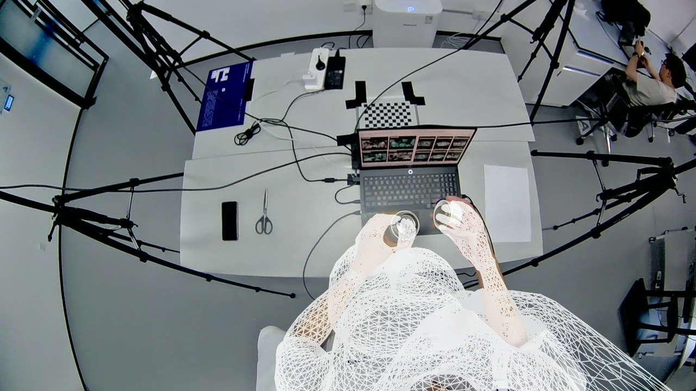
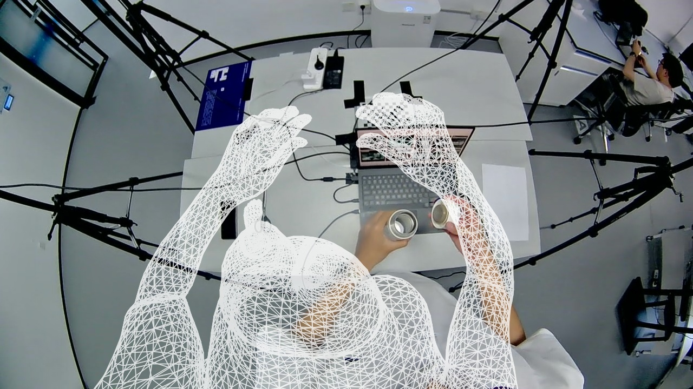
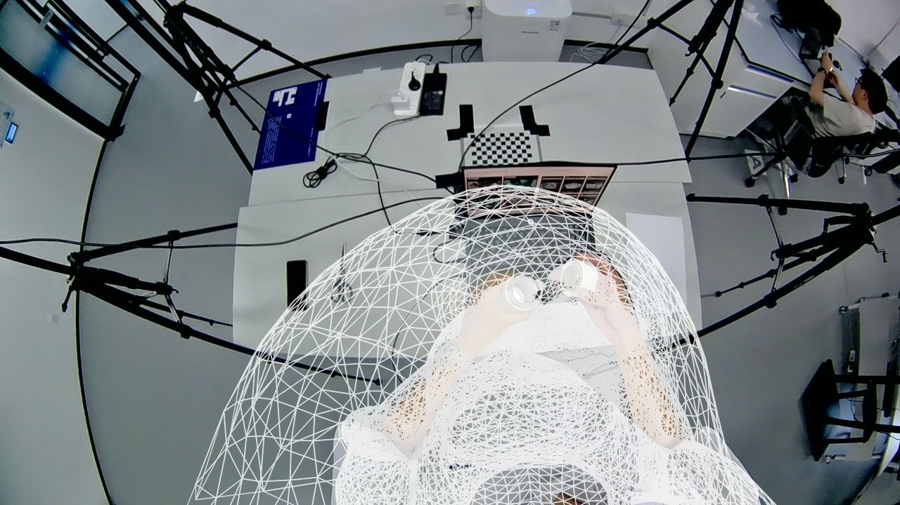
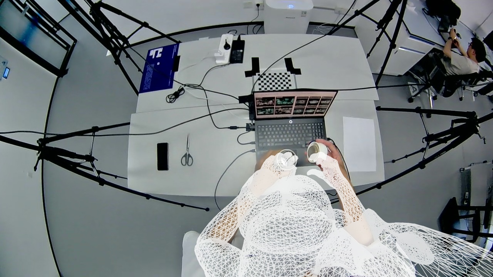
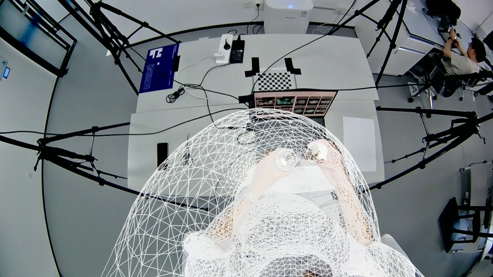
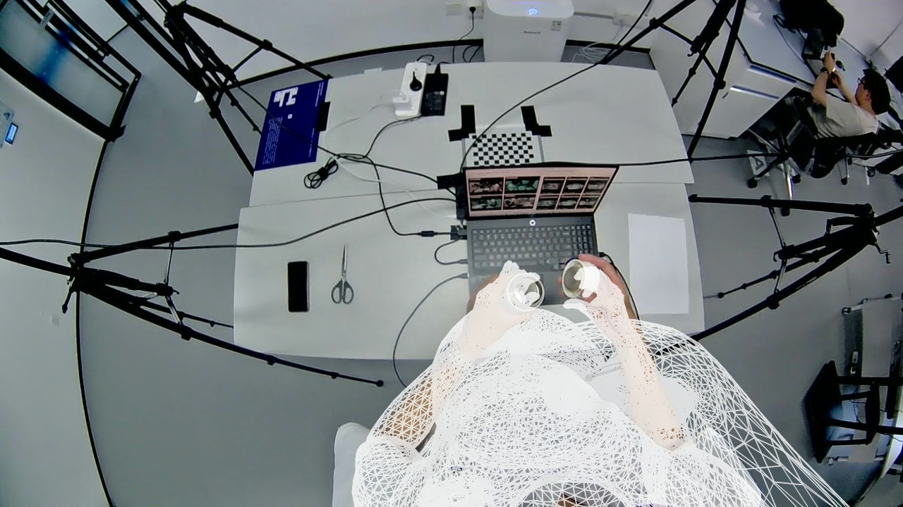
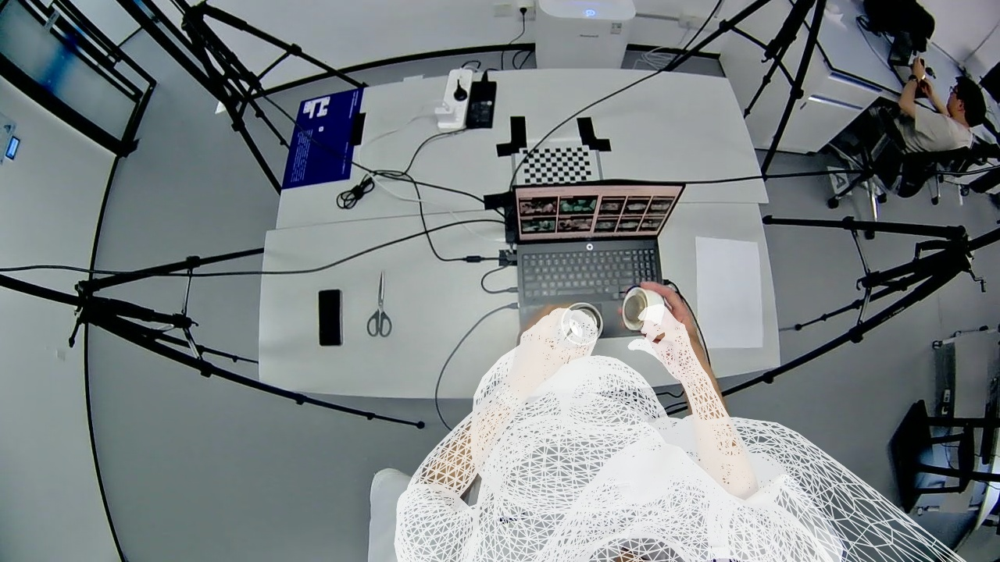
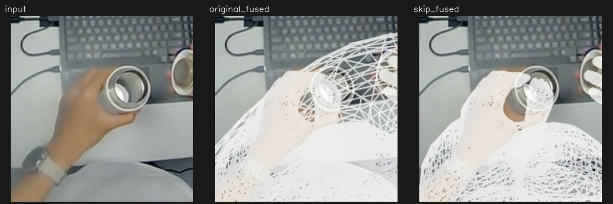
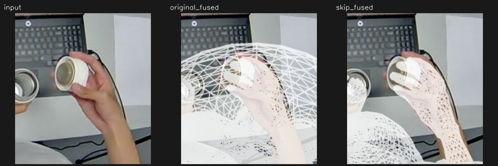

cam3 · 19.416 s
| 输出 | 最终身体 RMSE | 最终手部 RMSE | 最终头部入图数 | 局部交叉 左/右 |
|---|---|---|---|---|
| 原流程 | 9.04 px | 9.39 px | 2577 | 16 / 19 |
| 跳过第二阶段 | 15.47 px | 9.37 px | 1799 | 23 / 0 |


展开全部阶段：左原流程，右跳过第二阶段
Initial EgoSMPLX


Rigid fit


Stage 2 output


Wrist refinement


Contour selected body


MANO guided body


Final original seam
left 手与腕部相同区域对照

right 手与腕部相同区域对照
